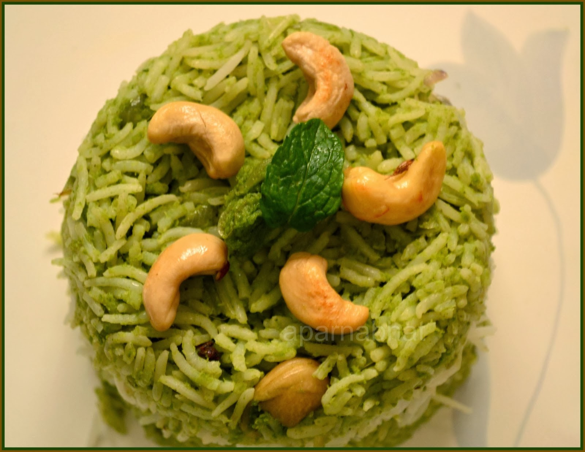

Rice (Basmati or any other rice) - 2 cups (washed & soaked) or 4 cups of cooked rice
Onion - 1 (chopped or sliced)
Lemon Juice - 1 tbsp
Water - 3 cups
Salt - to taste
Ghee/ Oil - 2 tbsp
Mint Leaves - 1 cup
Coriander Leaves (Cilantro) - 1 cup
Grated Coconut - 1/4 cup
Ginger - 1" piece
Garlic - 4 cloves
Green Chilies - 5 or 6
Whole Garam Masala - 1" piece cinnamon stick, 3 cloves, 2 cardamom, 1 star anise
Fennel Seeds - 1 tsp
Cashews/Peanuts - 2 tbsp
Mustard Seeds - 1/2 tsp
Channa Dal - 1 tsp
Urad dal - 1 tsp
Dry Red Chilies - 1
Bay Leaf - 1
You can make this rice with uncooked rice or with leftover cooked rice. I have explained both methods below. If you have uncooked rice, take 2 cups of it, wash it well and soak it for 15 minutes. If you have cooked rice, you need about 4 cups of it for the above measurement. The rice should be completely cook and the grains should be separate. Spread the rice in a plate and add couple spoons of sesame oil to keep the grains cool and separated.
Make a paste of all the ingredients under 'To Grind'.
Heat ghee/oil in a pan or pressure cooker. Fry all the ingredients under 'For Tempering'.
Add the chopped onions and saute till it turns golden brown.
Next add the ground paste. Saute on a medium flame for 5-10 minutes till the masala turns dark green, all the raw smell has vanished and oil starts separating.
After the masala is ready, if you have leftover cooked rice, you can just add the cooked rice and mix it with the masala. Add salt if required and cook on low flame for just couple of minutes for the flavors to be absorbed by the rice. Mint coriander rice is ready to serve.
If you do not have cooked rice, follow the steps below. Add 3 cups of water, lemon juice and required salt to the masala. Bring it to a boil.
Add the soaked rice to this. Cover the pressure cooker (or pan), reduce the flame and cook for 15 minutes. You can also transfer everything to an electric rice cooker and cook till the rice is done.
Switch off. Gently fluff up the rice and keep it covered for another 5 minutes before serving.